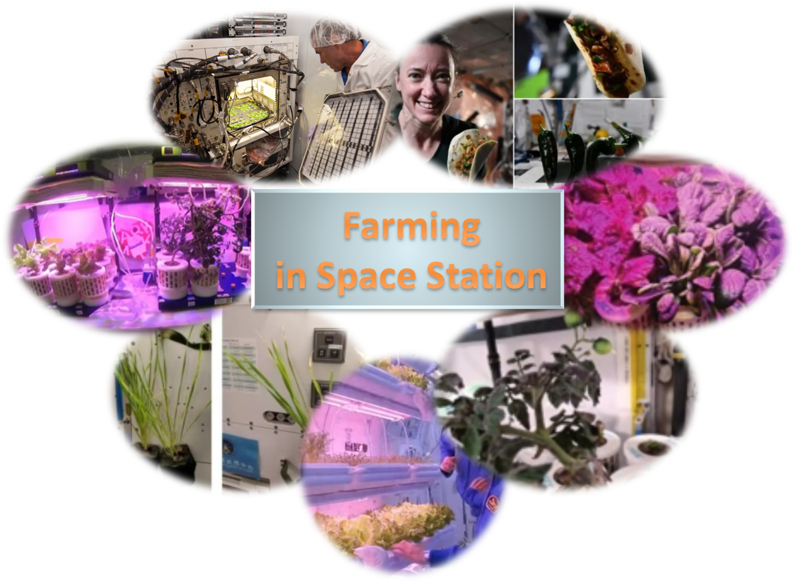

Right now, space farming is still very limited. Most experiments happen on the International Space Station, where astronauts grow small plants using hydroponics. Hydroponics works well in space because it doesn’t need soil and lets scientists control nutrients and water very precisely. Some plants like lettuce, kale, and dwarf wheat have been grown successfully, but the systems are small and still need a lot of human attention.
On Earth, hydroponics has become much more advanced. Modern hydroponic farms use sensors, automation, and controlled environments to grow plants faster and with less water. Hydroponics can grow up to 134% more vegetables than soil farming and uses up to 98% less water. Vertical hydroponic farms can even double wheat production compared to regular fields. Even though hydroponics is efficient, it still has problems like high cost and labor needs, which is why new technology is still important—especially for space.